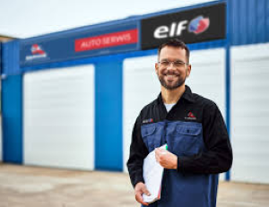

Dlaczego my?
- Doświadczeni mechanicy - nasz zespół to specjaliści z wieloletnim doświadczeniem w branży motoryzacyjnej
- Nowoczesne urządzenia - diagnostyka komputerowa i specjalistyczne narzędzia do precyzyjnych napraw
- Części zamienne wysokiej jakości - używamy oryginalnych i certyfikowanych części zamiennych
- Szybka obsługa - profesjonalne i sprawne wykonanie napraw w ustalonych terminach
- Gwarancja na usługi - wszystkie prace wykonywane z gwarancją jakości
- Konkurencyjne ceny - najlepszy stosunek jakości do ceny na terenie Bedlna
- Część sieci O.K. Serwis - przynależność do ogólnopolskiego standardu jakości
- Kompleksowe usługi - od wulkanizacji po skomplikowane naprawy silnika wszystko w jednym miejscu
Obsługujemy marki takie jak
 |
||||
O nas
Serwis EWTOM to profesjonalny warsztat samochodowy. Bedlno i okolice to obszar działania warsztatu.
Realizujemy kompleksowe naprawy, takie jak:
wulkanizacja, wymiana rozrządu, serwis olejowy, wymiana filtrów, naprawa silnika, przegląd techniczny i wiele więcej!
Nasz serwis samochodowy należy do ogólnopolskiej sieci O.K. Serwis. Wysoka jakość świadczonych usług to zawsze nasz priorytet.
